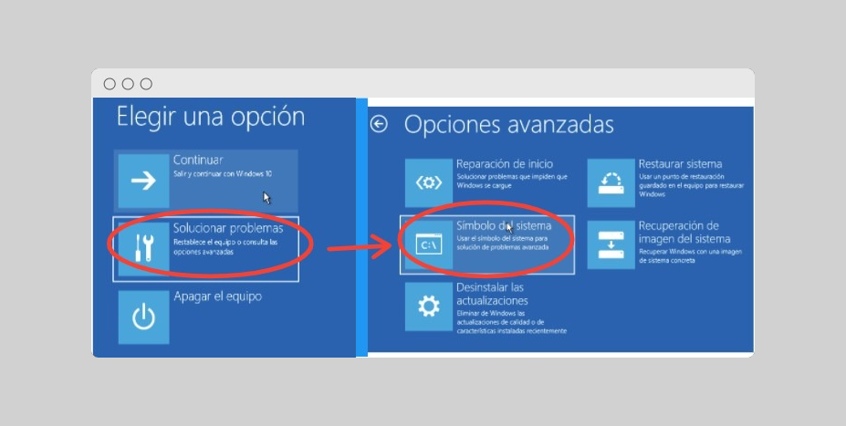
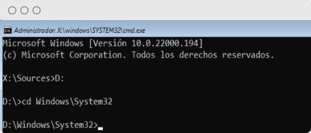

Lo que haremos será reforzar uno de los "trucos", que aún tenemos disponible en Windows. Cuando no sabemos la clave de usuario y queremos cambiarla. A través de la modificación de la utilidad "Utilman.exe".
Primero arrancamos con un CD instalación de Windows, podríamos también crear un "USB arrancable" o con un "LiveCD Linux".
Arrancamos y nos dirigimos a Reparar equipo → Solucionar problemas → Símbolo del sistema. Nos abre un terminal.

En la Terminal, tenemos que irnos a la carpeta "System32". Aquí están las herramientas de Accesibilidad; entre ellas "Utilman.exe". Cambiamos de unidad donde tengamos instalado Windows. En mi caso es la unidad D: Casi siempre será C:

Buscaremos el archivo "Utilman.exe". Si queremos conservarlo para habilitarlo de nuevo en el futuro. Le pondremos un nombre que nos lo haga recordar, sino simplemente renombramos por cualquier cosa. Que deje también de ser un ".exe". Nos quedaría algo así.